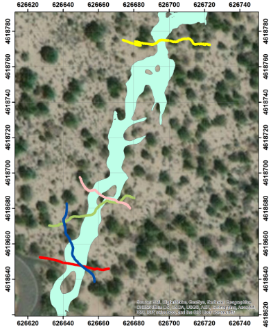

Valentine Cave data - TubeX project
General info about the Valentine Cave
Valentine Cave (entrance, 41.7088°N, 121.4784°W) has an estimated age of 11 ka and is younger than most other caves in the monument and originates from the Tickner Chimneys vents [geologic unit bmc in
Donnelly-Nolan and Champion, 1987;
Donnelly-Nolan, 2010]. The roof is thin (<~5 m), allowing tree roots to penetrate into the cave at several places. The entrance is surrounded by blocks from the collapsed surface with the floor composed of ropy lava (pāhoehoe) [
Waters et al., 1990].
Larson and Larson, 1990 describe the ceiling entrance of Valentine Cave to be made of dark patches of lava stalactites that are separated by white bands of water‐deposited minerals. Pillars are observed at the entrance (6 m wide, 18 m long) and ~36 m downstream into the tube [
Waters et al., 1990].
Bellow figure shows map of GPR and LiDAR surveys of the Skull Cave at LBNM. Green polygons represent terrestrial LiDAR scan (TLS) coverage of the tubes’ interiors. For interactive map view go to the
map tab on the webpage.
